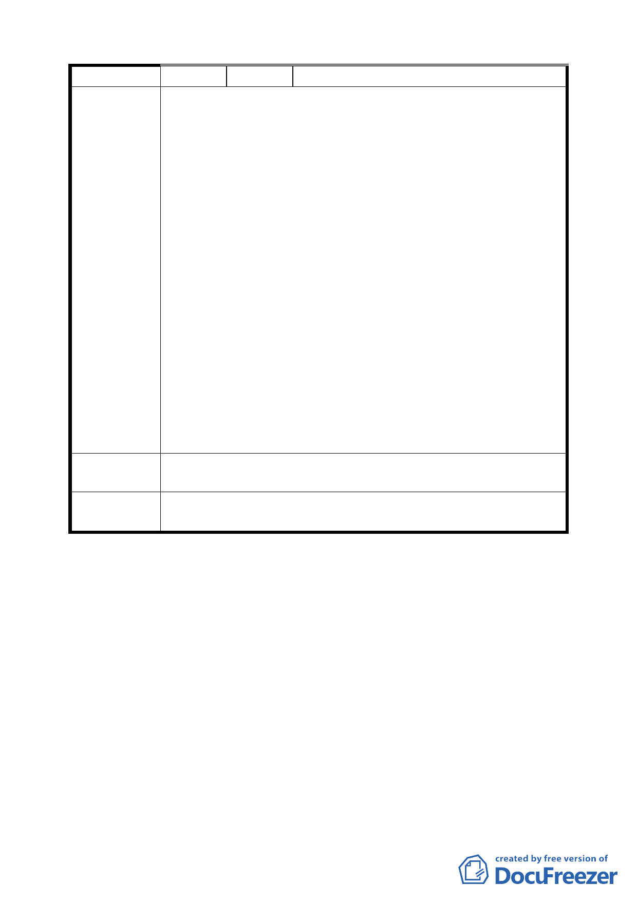

編號
陳情理由
建議辦法
委員會
決議
３ 陳情人 空軍總司令部
有關 貴府都市計畫「變更臺北市松山區美仁段 1 小段 16 地
號等 9 筆土地為公園用地計畫案」，本部表明異議。
一、案內土地與本部有關者，計松山區美仁段 17、17-1、17-3、
17-4 等 4 筆國私共有及同段 18-26、18-27、18-28 等 3 筆
國有土地，原係屬臺北市「松山新村」原址，並奉行政
院函核准改建在案，惟復因畸零地處理分割保留形成改
建剩餘地，並奉行政院函核准移交國產局依法處理，得
款撥充「國軍官兵購置住宅貸款基金」運用，合先敘明。
二、案內計畫因涉國庫收益，本部提出異議如下：
(一)有關 88 年間所標脫土地，係國產局依行政院核示辦
理，非由本部辦理標售；復因居民阻撓得標人開發土地
，致協調退還得標人價款（含利息），恢復國有狀態。
(二)本案土地原為住宅區，屬行政院專案核定變產置產之
不動產，現址綠化係居民逕行為之，本部前已多次協調
，惟渠等拒不配合，致無法依國有財產法處理；現貴府
計畫將案內土地，由住宅用地變更為公園用，雖有利該
社區生活環境提昇，然仍應兼顧本部、國防部及國產局
等行政機關維護國有財產之責任，故有關土地處分，仍
應採「有償撥用」或循其他兼顧國庫公益方式解決。
一、計畫案相關陳述請予以補充說明。
二、土地請以有償撥用或其他能兼顧國庫公益之方式處理。
有關土地取得方式，公有地依規定辦理撥用。
討論事項二
案名：變更臺北市南港區玉成段一小段 538 地號等 18 筆國小用地
為住宅區主要計畫案
說明：
一、本案係市府 94 年 12 月 21 日以府都規字第 09419565400 號函
送到會。
二、法令依據：都市計畫法第 27 條第 1 項第 3 款
三、申請單位：臺北市政府
四、計畫範圍：詳計畫圖所示
四